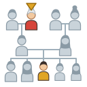
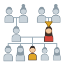
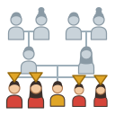

Unit 10
屋企人Family
爸爸 媽媽, 哥哥 家姐 細佬 細妹, 爺爺 嫲嫲 公公 婆婆: your family, and saying whose with 嘅 and 我個仔.
 Learn
Learn
Family and whose
Parents, brothers and sisters, grandparents on both sides, 老公 and 老婆, then 我嘅, 我媽媽 and 我個仔.

GameFamily Tree
Find people on the family tree, work out 爸爸嘅媽媽, and say whose things are whose.

GameTone Detective
Hear a family word and pick its tones. 媽媽 or 嫲嫲?

SpeakingSay It Back
Record yourself and compare your tones with a native speaker's pitch curve.